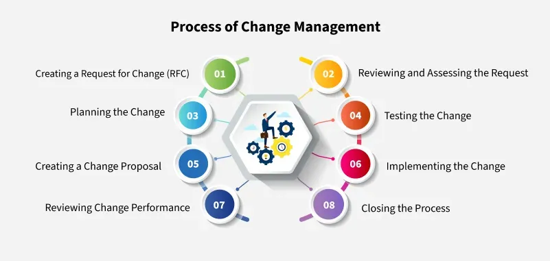
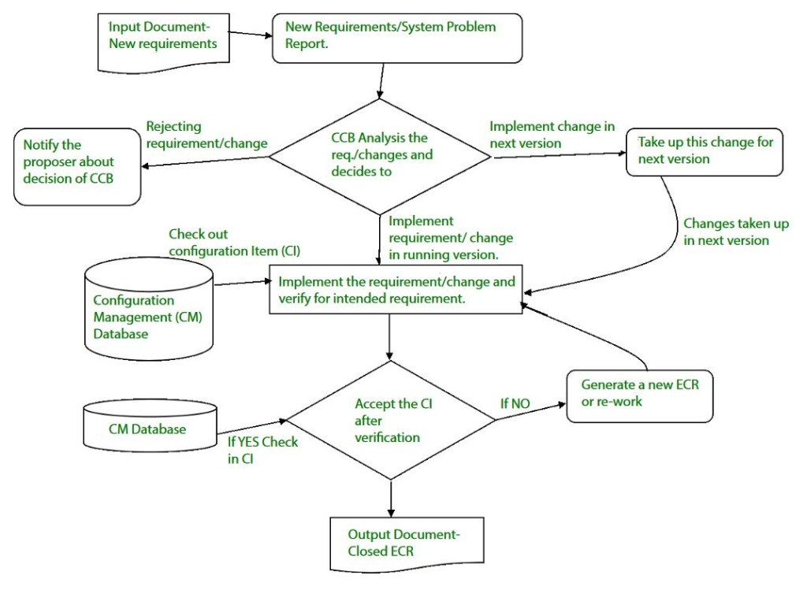

9.5 Change Control Process
Change management in project management is the process of handling changes that arise during a project — keeping the project on track even when requirements, schedules, or team dynamics shift unexpectedly. Change control is the formal SCM procedure within change management that governs how modifications to configuration items are requested, evaluated, approved, implemented, and verified. Configuration management is part of the overall change management approach — see §9.3 Objectives of SCM.
Change management vs change control
| Aspect | Change Management | Change Control (SCM) |
|---|---|---|
| Scope | Entire project — people, processes, requirements, schedule, team dynamics | Configuration items — code, docs, baselines in the CM database |
| Goal | Guide teams through transitions smoothly; ensure changes are adopted successfully | Identify, evaluate, prioritise, and control changes to CIs formally |
| Focus | Organisational and human side of change | Technical and product side — version control, baselines, traceability |
| Key artefact | Request for Change (RFC), change proposal, revised project plan | Change Request (CR), Engineering Change Request (ECR), new CI version |
| Decision body | Change management team, stakeholders, senior management | Change Control Board (CCB) |
What is change management in project management?
- Change management is a structured process that guides teams and individuals through transitions, ensuring everyone follows the same process and timeline when changes happen.
- The goal is to ensure changes are adopted successfully without excessive disruption to the project or team dynamics.
- A change is anything that alters the original plan — a new requirement, a bug fix, a change in team structure, or a shift in how tasks are assigned.
- Project management organises the project from start to finish — planning, goals, time management, and keeping the team aligned toward the same end result.
- Change management and project management work together — PM provides the framework; change management handles the transitions within that framework.
Sources of change in software projects
- Business reorganisation — structural changes in the client organisation that affect project priorities or contacts.
- New market conditions — competitive pressure or market shifts that require new features or faster delivery.
- New equipment or technology — adoption of new platforms, tools, or hardware that affects the product design.
- Bug fixes and errors — defects discovered during development or testing that require code or design changes.
- New customer needs — evolving user requirements discovered during development or after initial delivery.
- Performance or reliability improvement — non-functional requirements that emerge after initial specification.
- Budgetary or scheduling constraints — cost or time pressures that force scope reduction, reprioritisation, or process changes.
Why change management is important
- Improving performance: When changes are handled well, teams adjust quickly and keep work running smoothly, boosting overall project performance.
- Increasing engagement: Keeping team members engaged during change helps them feel part of the process, leading to higher motivation and productivity.
- Encouraging innovation: A structured change process creates an environment where new ideas are welcomed and teams adapt creatively to problems.
- Adopting new technologies: Good change management makes it easier for teams to adopt new tools or platforms without causing disruption.
- Implementing new requirements: As business needs evolve, change management ensures new requirements are added without confusion, keeping everything aligned with project goals.
- Reducing costs: Properly managed change avoids unnecessary delays and rework, saving money over the project lifecycle.
- Without change management, unexpected shifts can cause confusion, mistakes, and project failure — especially in large or distributed teams.
Types of change management
- Anticipatory change management: Planning ahead for changes that are known to be coming — e.g. preparing for a planned platform migration or a scheduled requirements update at the next milestone.
- Reactive change management: Responding to unexpected changes — a critical bug in production, a sudden regulatory requirement, or a crisis that forces rapid reprioritisation.
- Incremental change management: Making small, gradual changes over time — e.g. continuously adding features in an incremental development model rather than one large release.
- Strategic change management: Large, organisation-wide changes — adopting a new technology stack, switching from waterfall to agile, or changing the overall product direction.
Process of change management — eight steps
The change management process guides people and organisations through changes smoothly and efficiently, ensuring everyone gets on board with the transition:

- Creating a Request for Change (RFC): Identify the need for change (bug, improvement, new requirement) and create a formal RFC document explaining what needs to change, why, and the potential impact on the system.
- Reviewing and assessing the request: The change management team reviews whether the change is needed, feasible, and what resources and risks are involved.
- Planning the change: Create a detailed plan outlining what will be done, when, what resources are required, and backup plans to avoid major disruptions.
- Testing the change: Test the change in a controlled environment before going live to ensure it works as expected and does not break the existing system.
- Creating a change proposal: If testing succeeds, write a formal change proposal with implementation details and risks; submit for stakeholder approval.
- Implementing the change: Apply the approved change in the live environment — gradually or during planned downtime to minimise disruption.
- Reviewing change performance: Monitor whether the change achieved desired outcomes, check for new issues, and collect user feedback.
- Closing the process: Update documentation, conduct a final review, and officially close the change once everything runs smoothly.
SCM change control process
Within the broader change management process, change control is the SCM-specific procedure for modifying configuration items. It maps to the eight-step process above but focuses on the CM database, CCB decisions, and version control:
Objectives of change control
- Change control aims to identify, evaluate, prioritise, and control changes requested by team members or stakeholders.
- Changes must be analysed before implementation, recorded with before-and-after details, and reported to all affected parties.
- The process prevents uncontrolled modifications that could undermine a well-managed software project.
- Change control is one of the five SCM activities — see §9.4 SCM Activities.

Steps in the change control process
- Submit Change Request (CR): A team member or stakeholder documents the proposed change, its reason, and the affected configuration items.
- Evaluate the change: Assess technical merit, potential side effects, overall impact on other CIs and system functions, and projected cost of the change.
- Prepare change report: Document the evaluation results for review by the decision authority.
- CCB decision: The Change Control Board (CCB) — a person or group with authority — makes a final decision on the status and priority of the change.
- Generate ECR (if approved): An Engineering Change Request is created describing the change, constraints to be respected, and criteria for review and audit.
- Check out, modify, test: The affected CI is checked out of the project database, the change is implemented, and the modified object is tested.
- Check in and create new version: The object is checked back into the repository and version control mechanisms create the next version of the software.
- Notify if rejected: If the CCB rejects the change, the requestor is notified with a proper reason.
CHANGE_CONTROL(configuration_item CI)
STEP 1 — SUBMIT
REQUESTOR submits Change Request (CR)
DOCUMENT: reason, affected CIs, proposed modification
STEP 2 — EVALUATE
ASSESS technical merit of change
ASSESS potential side effects on other CIs and system functions
ESTIMATE overall impact and projected cost
PREPARE change report with evaluation results
STEP 3 — CCB DECISION
CHANGE CONTROL BOARD (CCB) reviews change report
DECIDE: APPROVE | REJECT | DEFER
IF REJECTED THEN
NOTIFY requestor with reason → END
END IF
STEP 4 — IMPLEMENT (if approved)
GENERATE Engineering Change Request (ECR)
DESCRIBE change, constraints, review/audit criteria
CHECK OUT CI from project database
IMPLEMENT modification
TEST modified CI
STEP 5 — CHECK IN
CHECK IN CI to project database
CREATE new version using version control mechanisms
UPDATE configuration status accounting records
NOTIFY stakeholders of approved change
END CHANGE_CONTROLMapping change management steps to SCM change control
| Change management step | SCM change control equivalent |
|---|---|
| 1. Create RFC | Submit Change Request (CR) / New Requirements Report |
| 2. Review and assess | Evaluate technical merit, side effects, impact, cost → change report |
| 3. Plan the change | CCB approves; generate ECR with constraints and audit criteria |
| 4. Test the change | Check out CI → implement → test in controlled environment |
| 5. Create change proposal | ECR formally documents approved change for implementation |
| 6. Implement the change | Check in CI to CM database; create new version |
| 7. Review performance | Configuration audit; verify CI meets intended requirements |
| 8. Close the process | Closed ECR; update status accounting; notify stakeholders |

Roles in change control

| Role | Responsibilities |
|---|---|
| Interested party (requestor) | Documents the change request with priority, proposed approach, and workaround if the change is not implemented |
| Project manager | Acknowledges that the change applies to this project and routes it to reviewers and the CCB |
| Change Control Board (CCB) | Enters the change request into the tracking system log; evaluates priority; makes final approve/reject/defer decision |
| Project team member (reviewer) | Reviews the change request and determines whether it is worth evaluating for action; provides technical assessment |
- After a decision, the requestor is always informed of the outcome — approved changes proceed to implementation; rejected changes are documented with reasons.
- The CCB may also decide to defer a change to the next version rather than implement it in the current release — see the SCM cycle diagram above.
Revise the project plan
- When deliverables, schedule, budget, or approach change significantly, the project plan must be revised to reflect the plan actually in use by the team.
- Plan revision also occurs at the end of each major lifecycle phase as a standard review point.
- The senior manager reviews changes to the project plan and approves the revised version.
- A project that needs to manage changes to scope or product description must have a configuration management plan from the outset.
Guidelines for making changes
- No silent changes: Every modification must go through the formal change control system — ad hoc edits are not permitted on baselined items.
- Preserve quality: Changes must not degrade the overall quality of the product; testing is mandatory before check-in.
- Formal system with flexibility: The process must be rigorous enough to prevent chaos but flexible enough to accommodate legitimate urgent fixes.
- Maintain records: All change requests, decisions, and implementations are documented for audit and traceability.
- Revise the plan when needed: After a major lifecycle phase or significant change to deliverables, schedule, budget, or approach, the project plan is revised and approved by senior management.
- Projects requiring scope or product changes must have a configuration management plan as part of the overall project documentation.
Example — change management in practice
- Software project example: A client requests a new reporting module mid-project that was not in the original SRS. The team creates an RFC, the CCB assesses impact on schedule and architecture, a plan is made, the module is developed and tested in a staging environment, and only then merged into the main codebase after approval — with the project plan and SRS updated to reflect the new scope.
- Hospital EHR system example: A hospital switching to a new electronic health record system affects nearly every operation — from patient tracking to billing. Without a change management plan, the transition causes confusion, mistakes, and delays. A good plan ensures staff receive proper training before go-live, feedback is collected after deployment, and issues are addressed quickly — keeping operations efficient and minimising disruption to patient care.
- Both examples show that change management is not just a technical process — it requires planning, communication, training, and post-implementation review to succeed.
Change control in requirements management
- Proposed requirement changes are logged, assessed for impact on cost, schedule, and design, and approved or rejected by the CCB — see §4.7 Review & Management of User Needs.
- Each requirement should be uniquely identified for traceability so that changes can be tracked from SRS through design, code, and test.
- Change control connects SCM to SQA — SQA ensures adequate change management practices are followed — see §8.2 SQA.
Q: Explain change management and change control. Describe the eight-step change management process, the SCM change control procedure, and the role of the CCB.
Model answer points:
- Change management = handling project changes smoothly; change control = formal SCM procedure for CI modifications.
- CM is part of overall change management; change control objective: identify, evaluate, prioritise, control changes.
- Sources of change: business reorganisation, market conditions, new tech, bugs, customer needs, performance, budget/schedule.
- Types: anticipatory, reactive, incremental, strategic.
- 8 steps: RFC → review/assess → plan → test → change proposal → implement → review performance → close.
- SCM steps: CR → evaluate → change report → CCB → ECR → check-out → modify → test → check-in → new version → closed ECR.
- CCB = approves/rejects/defers; roles: requestor, PM, CCB, reviewer; requestor always informed.
- Guidelines: no silent changes, preserve quality, formal system, flexibility, records + revised plan.
- Revise project plan when deliverables/schedule/budget/approach change significantly; configuration management plan required.